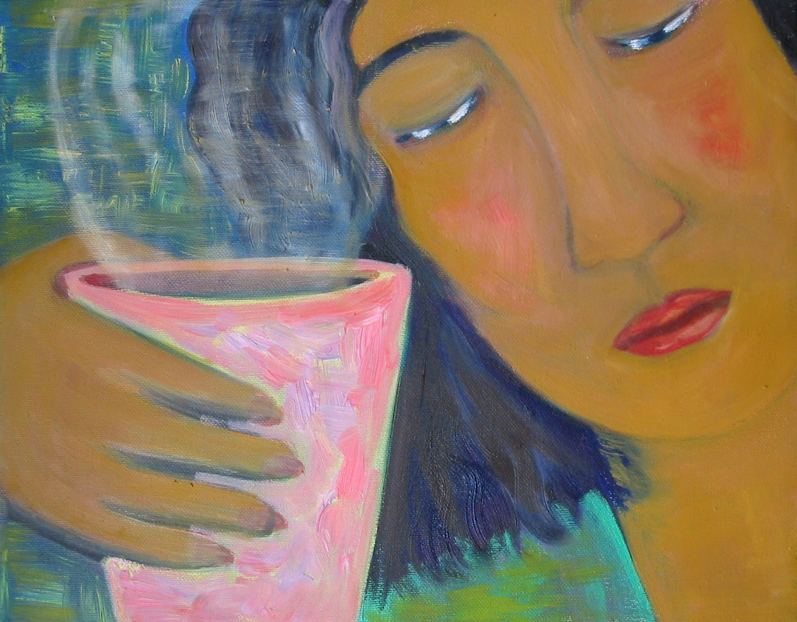
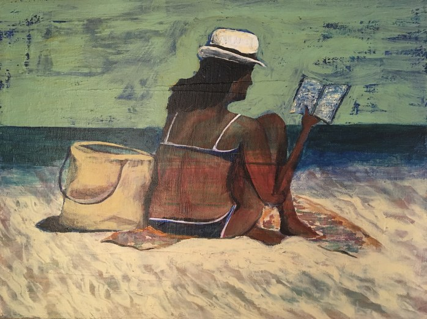
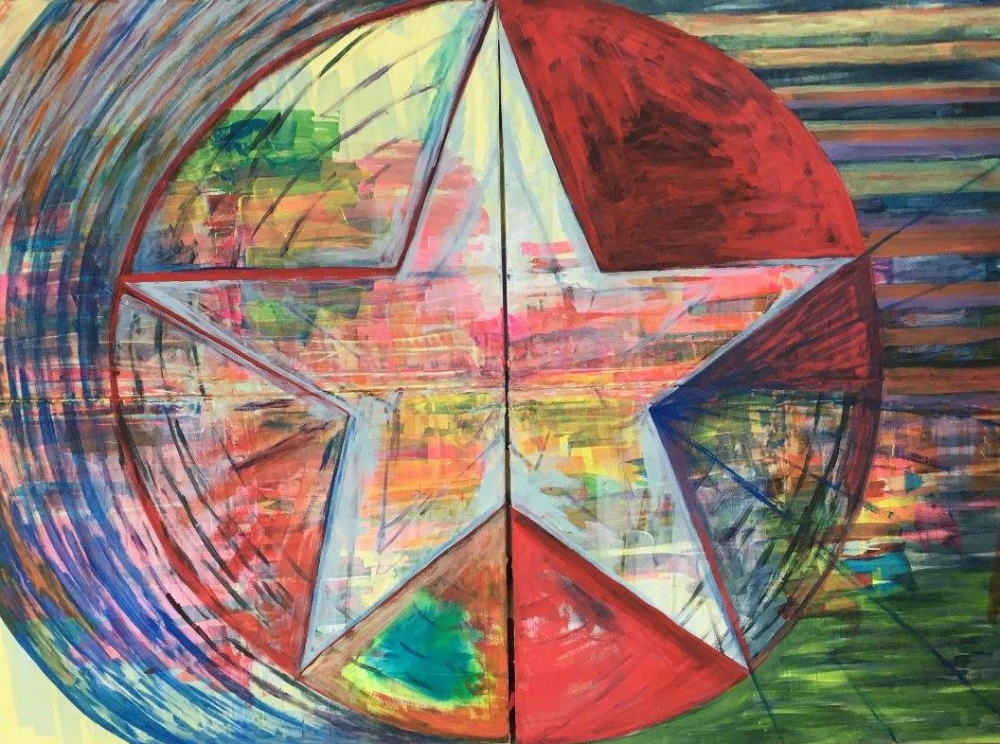
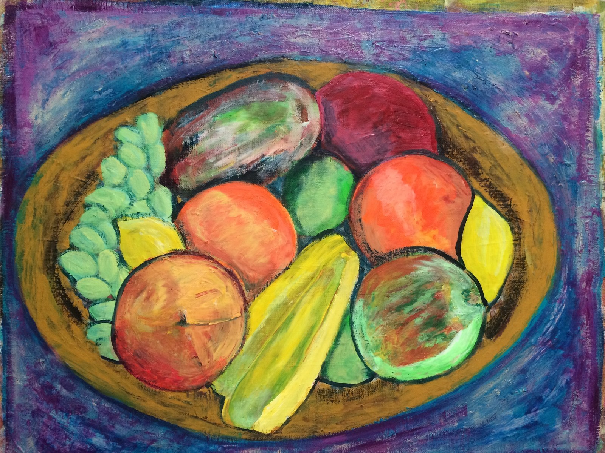

Art
Paintings and drawings, alongside the writing. New pieces and works in progress appear on Instagram first.




Paintings and drawings, alongside the writing. New pieces and works in progress appear on Instagram first.



